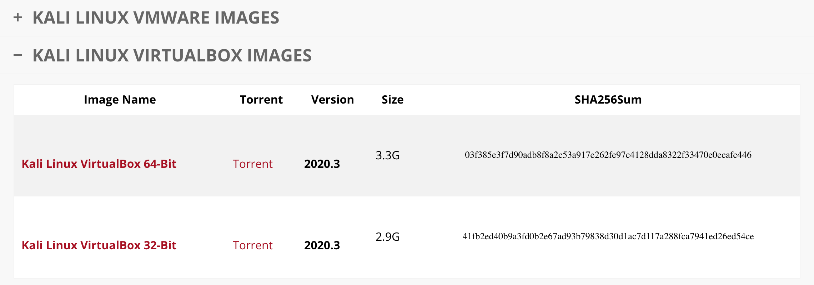
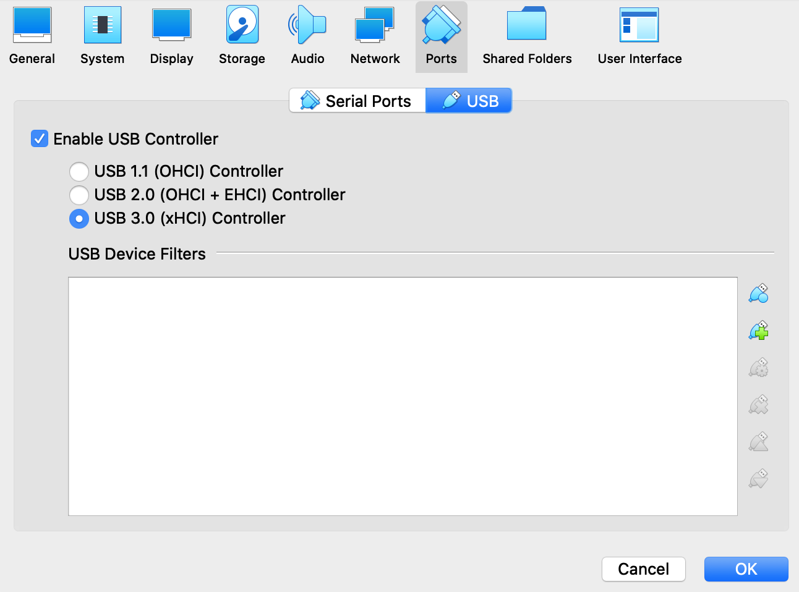

Pre-requisites
The syntax of code to be typed into Terminal or the command line will be
RED
. So anytime you see something in
RED
you know that it's syntax code and should be entered into Kali, Terminal, Windows command line, etc.
It's best to have (2) network cards capable of injection.
Computer/Laptop
Intel or AMD CPU
Minimum 4GB of RAM
60+ GB of hard disk space
Internet access
The more memory your computer has the better it will be because being able to run multiple VM's at once is very beneficial. When you run VM's you dedicated some RAM to those machines and operating smoothly is what everyone wants. Hard drive space is important too if you plan on having a multiple VM's as each can take up to 10GB each minimum.
"Professional" cybercriminal maniacs have their machines like:
Intel or AMD CPU
32+ GB of RAM
1 TB+ of hard disk space
Internet access
Download VirtualBox and the VirtualBox Extension Pack from:
https://www.virtualbox.org/wiki/Downloads
Once VirtualBox is installed double click on the VirtualBox Extension Pack you downloaded to install that to ensure VirtualBox runs smoothly for this course!
Download Kali VirtualBox
https://www.kali.org/downloads/
Make sure you select the VirtualBox image and not the VMWare image!
https://www.offensive-security.com/kali-linux-vm-vmware-virtualbox-image-download

Download either the 64-Bit or 32-Bit version of Kali. This is different for everyone so if the one you downloaded doesn't load Kali then the other one will and now you'll know! ;) If it boots up and you're at Kali desktop then good!
If you have issues then download the Kali ISO and install it through virtualbox. If you can't run any of those then your machine just isn't up to par brothers.
Some macOS will have their VM shut down everytime when you try to load it. If this occurs then open Terminal and type:
VBoxManage setextradata global GUI/HidLedsSync 0
Default username is "kali" and default password is "kali"
Shutdown Kali then select the Kali VM in VirtualBox and click - Settings - Ports - Select "Enable USB Controller" on USB 3.0 and then click "Ok"

Re-launch Kali
Next we need to setup our Kali machine.
Ensure you're connected to the internet on your host machine and open Terminal in Kali VM. If you don't know where the Terminal is search for it using the search function in Kali.
Open a new Terminal and type:
sudo apt-get update && sudo apt-get dist-upgrade -y && sudo apt-get install vsftpd lighttpd isc-dhcp-server hostapd-wpe dnsmasq libcurl4-openssl-dev libnl-3-dev hostapd zlib1g-dev libnl-genl-3-dev libssl-dev -y && sudo apt autoremove -y
If you get any errors at all when running the above command such as:
"E: Could not get lock ...."
Then run these commands before running the above command again:
sudo rm /var/lib/dpkg/lock-frontend
sudo rm /var/lib/dpkg/lock
sudo rm /var/cache/apt/archives/lock
Once you've run those commands you can the run the above update command with success.
Once that's done run the following commands in Terminal:
sudo apt-get update && sudo apt-get install leafpad python3-pip -y
git clone https://github.com/wifiphisher/roguehostapd.git
cd roguehostapd
sudo python setup.py install
cd ..
sudo pip3 uninstall tornado
git clone https://github.com/wifiphisher/wifiphisher.git
cd wifiphisher
sudo leafpad setup.py
Replace 'tornado == 4.5.3' with 'tornado' in line 154
sudo chmod +x setup.py
sudo python3 setup.py install
cd ..
git clone https://github.com/ZerBea/hcxdumptool.git
cd hcxdumptool
sudo make
sudo make install
cd ..
sudo rm -r hcxdumptool
git clone https://github.com/ZerBea/hcxtools.git
cd hcxtools
sudo make
sudo make install
cd ..
sudo rm -r hcxtools
git clone https://github.com/derv82/wifite2.git
cd wifite2
sudo python setup.py install
cd ..
sudo gzip -d /usr/share/wordlists/rockyou.txt.gz
If you're interested in furthering your "hacker" knowledge you should begin to research Kali Linux and the programs on it. Don't get overwhelmed by the amount of tools in Kali and the lack of knowledge surrounding them you have but try and stay focused on what interests you. This takes time and requires you to learn just like others before you have. Relax and know the basics. Once you have the basics down you can move forward because if you don't take it slow you'll be overwhelmed and frustrated with the vast amount of information you'll be presented with. Remember, it's not going to happen overnight and by learning how to increase your OPSec along with how to compromise Wi-Fi networks is an important step to remain out of trouble.
Click to continue to Chapter 4